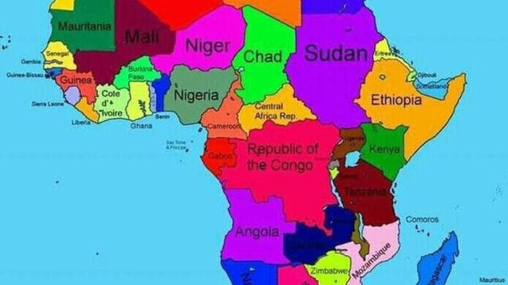
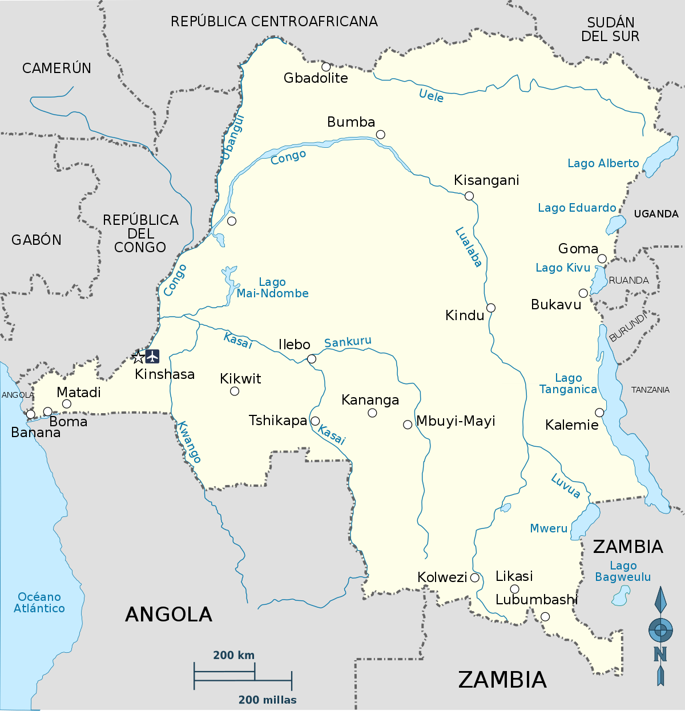

Myanmar masacred soldiers 'released early'
4h | Asia

Ethiopia apologises for map that erases Somalia
3h | Africa

Scores dead or missing as DR Congo boat sinks
13m | Africa
Homeless woman´s killing horrifies Australia
11h | Australia
Fighting malaria: Night shift on the frontline
17h | Health